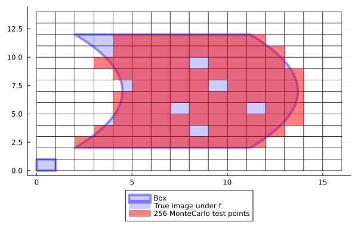

CPUSampledBoxMap
Naturally, if an increase in accuracy is desired in a SampledBoxMap, a larger set of test points may be chosen. This leads to a dilemma: the more accurate we wish our approximation to be, the more we need to map very similar test points forward, causing a considerable slow down for complicated dynamical systems. However, the process of mapping each test point forward is completely independent on other test points. This means we do not need to perform each calculation sequentially; we can parallelize.
If the point map only uses "basic" instructions, then it is possible to simultaneously apply Single Instructions to Multiple Data (SIMD). This way multiple function calls can be made at the same time, increasing performance by roughly 2x.

For more details, see the maximizing performance section.
BoxMap(:grid, :simd, map, domain::Box{N}; n_points::NTuple{N} = ntuple(_->16, N)) -> CPUSampledBoxMapConstruct a CPUSampledBoxMap that uses a grid of test points. The size of the grid is defined by n_points, which is a tuple of length equal to the dimension of the domain. The number of points is rounded up to the nearest mutiple of the cpu's SIMD capacity.
BoxMap(:montecarlo, :simd, map, domain::Box{N}; n_points=16*N) -> SampledBoxMapConstruct a CPUSampledBoxMap that uses n_points Monte-Carlo test points. The number of points is rounded up to the nearest multiple of the cpu's SIMD capacity.
Example
julia> n_points = 256256julia> F = BoxMap(:montecarlo, :simd, f, domain, n_points = n_points)ERROR: MethodError: no method matching MonteCarloBoxMap(::Val{:simd}, ::typeof(Main.f), ::Box{2, Float64}; n_points::Int64) Closest candidates are: MonteCarloBoxMap(::Any, !Matched::Box{N, T}; n_points) where {N, T} @ GAIO ~/work/GAIO.jl/GAIO.jl/src/boxmap_sampled.jl:65 MonteCarloBoxMap(::Any, !Matched::Q; n_points) where {N, T, Q<:AbstractBoxPartition{Box{N, T}}} @ GAIO ~/work/GAIO.jl/GAIO.jl/src/boxmap_sampled.jl:70julia> p = plot!( p, F(B), color=RGBA(1.,0.,0.,0.5), lab="$n_points MonteCarlo test points" )ERROR: UndefVarError: `F` not defined
